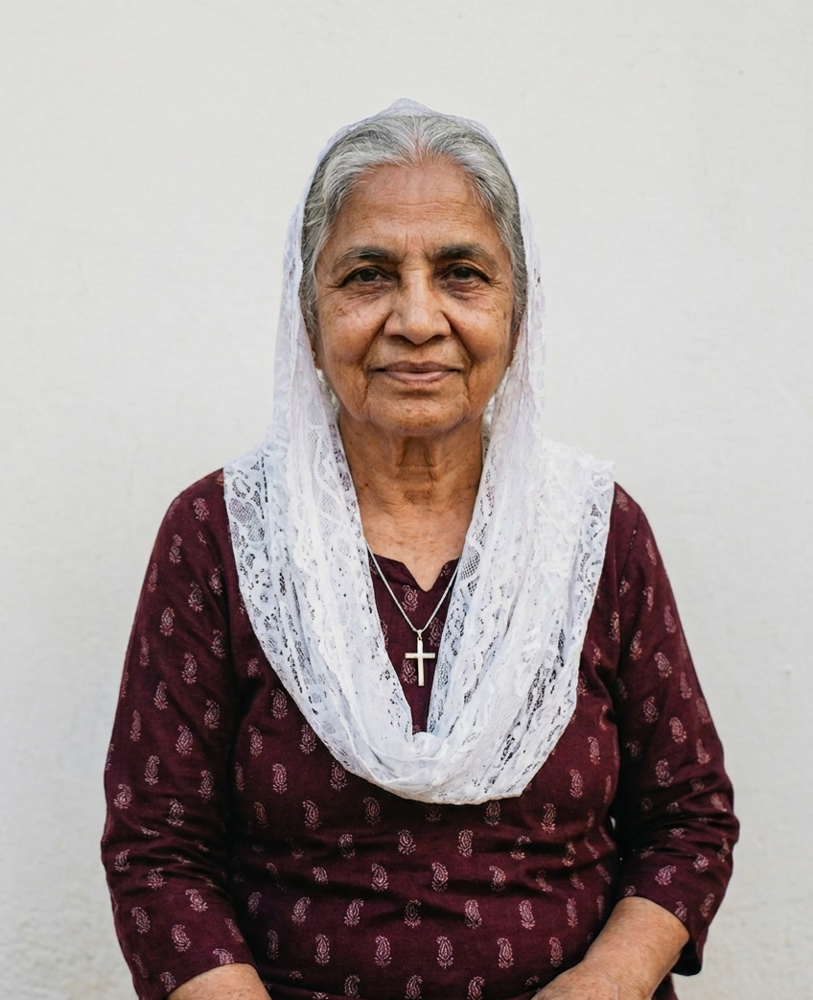

Built on Faith, Stewardship, and Accountability – serving with humility, integrity, and excellence.
At Lerato Foundation, governance is founded on the belief that leadership is a responsibility entrusted by God to serve others with humility, integrity, and excellence. As a Christian-led organisation, our governance approach is shaped by biblical principles of servant leadership, compassion, stewardship, justice, accountability, and love for others.
We believe that effective governance is not only about policies, structures, and oversight; it is about ensuring that every decision, programme, and partnership reflects our commitment to serving people and creating lasting transformation.
Our governance framework provides a strong foundation for responsible leadership, ethical decision-making, transparency, and sustainable impact. Through the guidance of the Board of Directors and collaboration with the executive leadership team, Lerato Foundation is committed to maintaining the highest standards of accountability while pursuing our mission of empowering young people, strengthening families, and transforming communities.
Guided by faith, integrity, and a commitment to serving others.
Lerato Foundation embraces the Christian model of servant leadership, where leaders are called to serve with humility, compassion, and commitment.
All resources entrusted to Lerato Foundation — finances, partnerships, talents, and opportunities — are managed wisely.
Our governance is guided by honesty, accountability, and ethical conduct, creating trust through consistent actions.
The Board of Directors serves as the highest governance authority of Lerato Foundation. The Board provides strategic oversight, organisational guidance, and accountability to ensure the Foundation remains faithful to its mission, values, and long-term objectives.
The Board brings together Christian leaders and professionals from diverse backgrounds who contribute expertise in leadership, finance, programmes, communication, and organisational development.
Martha Sales provides strategic leadership and governance oversight for Lerato Foundation. She guides the board in maintaining accountability, integrity, and effective decision-making while ensuring the foundation remains faithful to its Christ-centered mission.
Daniel Li supports global strategy, partnerships, and institutional development. He contributes to strengthening the foundation's international vision and sustainable growth.
Sarah Thompson oversees governance records, board communication, compliance documentation, and administrative systems to promote transparency and order.
Hannah Wilson supports board coordination, governance processes, and organizational administration while promoting teamwork and servant leadership.
James Flint provides financial governance and oversight, ensuring responsible stewardship, accountability, and sustainability of the foundation's resources.

Ananya Thomas provides strategic oversight in program development and implementation, helping ensure Lerato Foundation's initiatives achieve lasting community impact.
Mary Elizabeth leads communication and partnership engagement, ensuring the foundation's vision, stories, and impact are effectively shared globally.
Joseph Caleb supports strategic development, governance expansion, and institutional growth while promoting excellence and faithful service.
The Board's commitment to faithful and accountable leadership.
Providing guidance on the Foundation's vision, mission, priorities, and long-term sustainability.
Ensuring responsible stewardship of resources through oversight of financial practices, sustainability planning, and accountability systems.
Supporting programmes that align with the Foundation's mission and create meaningful impact among young people and communities.
Promoting policies and practices that protect the organisation, beneficiaries, partners, and stakeholders.
Ensuring that organisational leadership operates effectively, ethically, and in alignment with the Foundation's values.
Prioritising the safety, dignity, and wellbeing of children, young people, and all beneficiaries involved in Lerato Foundation programmes.
The values that guide our leadership and decision-making.
Guided by Christian values, we serve with compassion, humility, and purpose.
We lead with honesty, transparency, and ethical responsibility.
We remain responsible to God, our beneficiaries, partners, supporters, and communities.
We pursue high standards in leadership, programmes, and service.
We demonstrate care and commitment to improving lives.
We build systems and partnerships that create lasting transformation.
At Lerato Foundation, governance is more than a structure — it is a commitment to faithful service and responsible leadership.
Through Christ-centred governance, professional accountability, and servant leadership, we seek to create an organisation that inspires hope, develops leaders, supports communities, and transforms lives for generations to come.
Join us in empowering young people and transforming communities across Kenya.